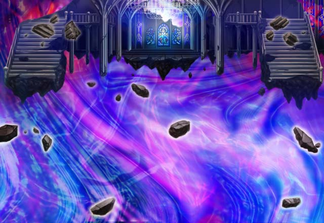

カル
Shou-chanもまた面倒なことに 巻き込まれ続けたんだろう？
カル
こいつを消せば、ヴリクシャへの道が 開くってことでいいんだよな？
セリア
いつもと違って、 随分、自信無さげじゃない？
セリア
パリス。 あんた、変なことティリスに 吹き込んでないでしょうね？
セリア
あのザーグとかいう神徒が、 いつまた現れるかわからないんだから。
セリア
この嫌な気配だってきっとあいつが 原因に決まってるわよ。
ザーグ
かつてこの地の王族が喚び出した 異界の神がいまだ存在している。
ザーグ
その神々を倒した時、貴様の実力を認め 真実を伝えよう。
ルジーナ
ケッ、相変わらず勝手なことだけ言って 消えちまいやがったか。
カル
とりあえず、これでどちらにしろこの奥に いる敵は倒さなくちゃいけなくなったな。
カル
いつも通り、 それぞれが行動ってことでいいよな？
ルジーナ
足手まといと一緒に 仲良く探索なんかできるかよ。
カル
それじゃあ、Shou-chan、 お互いに無理はせずに行こうぜ！
パリス
エリオール様は、 こんな小物の相手などしないわ。
パリス
アフラ・ディリスを倒すため 帝都に戻って準備中よ。
カル
なんだかんだあっちも忙しいみたいで やっぱりランドールに戻ったよ。
カル
「お前たちの力を信じてる。 特にティリスちゃんのな」
ティリス
グラ爺に信頼されてて嬉しくて 感激しちゃった♪
カル
…………。 まあ、ここで考えてても仕方ない。
セリア
ルジくん、１人だからって 迷子にならないようにね♪
カル
お前もわかってると思うが、 女神さんとパリスの様子が少しおかしい。
カル
２人とも俺らには話せないことを 色々と抱えてるかもしれないが、
カル
Shou-chanのこと よろしく頼んだぜ！
パリス
ティリス様、申し訳ないのですが、 私もこの先は別行動をさせていただきます。
ティリス
そっか……。 Shou-chan、大丈夫だよね？
ティリス
でも、ここは怖い気配がいっぱいだから パリスも気を付けてね。
ティリス
異界の神だかなんだか知らないけど Shou-chanなら絶対勝てるよ！
ティリス
私が最初からずっと一緒に冒険している 召喚師だもんね♪
ティリス
それじゃあ、異界の神、目指して しゅっぱ～～つ！